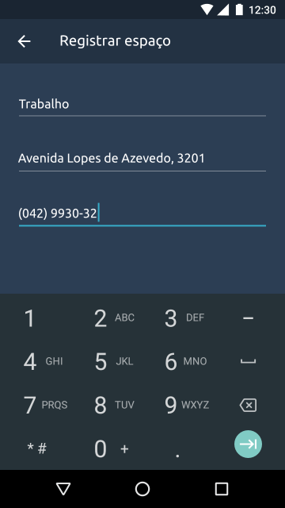
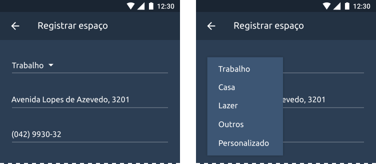
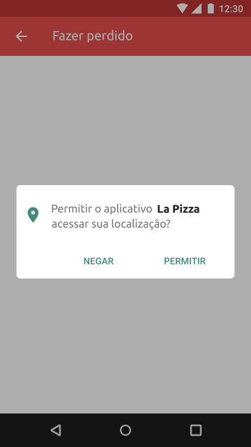
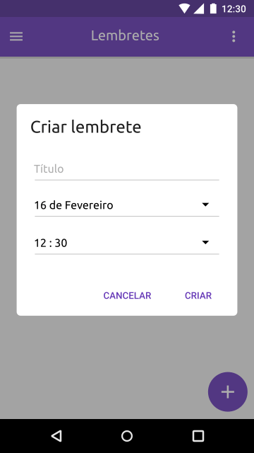
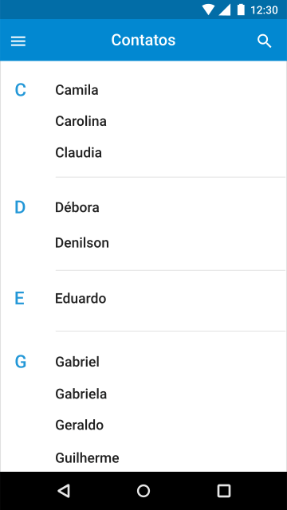
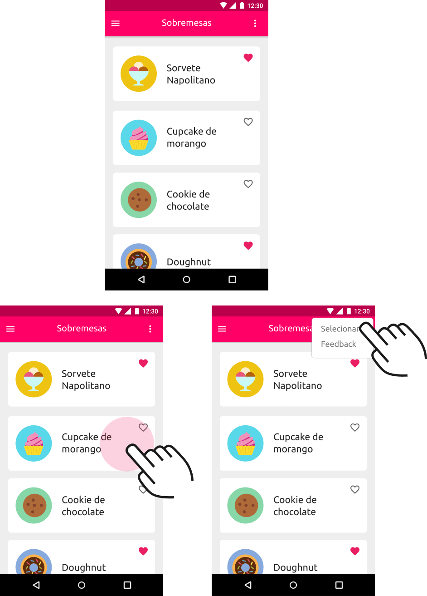

Forneça atalhos ou interações alternativas as funcionalidades usadas com mais frequências. Conheça as preferências das pessoas no decorrer do tempo. Em vez de pedir que façam as mesmas escolhas repetidamente, coloque escolhas anteriores em fácil alcance.
Flexibilidade e eficiência de uso
Entrada de dados
Os dispositivos móveis são difíceis de usar de uma perspectiva de entrada de dados devido ao seu teclado reduzido. Forneça aos usuários uma forma prática de inserir dados, para isso, considere o uso de tecnologias assistivas como a câmera, o microfone e os sensores para diminuir a carga de trabalho.
Por exemplo, usando o GPS (sistema de posicionamento global) para identificar a localicação do usuário, usando o OCR(reconhecimento óptico de caracteres) e a câmera para capturar digitalmente as informações que o usuário precisaria inserir, ou utilizando o microfone para inserir e gravar conteúdo, o que salvaria o usuário o trabalho de digitar no teclado reduzido.
Em geral, os sistemas operacionais para dispositivos móveis ja possuem diversas variações do teclado para melhorar a entrada de dados. Na inviabilidade de tecnologias assistivas forneça os teclados apropriados para as entradas de dados. Ao perguntar por um endereço de e-mail, por exemplo, mostre o teclado de e-mail que inclui atalhos úteis como o ".com" e o "@".

Um teclado numérico específico para inserir número de telefone.
Quando possível, apresente escolhas. Torne a entrada de dados tão eficiente quanto possível. Considere usar um seletor ou uma lista em vez de um campo de texto, por exemplo, visto que é mais fácil escolher uma lista de opções predefinidas do que digitar uma resposta plausível de erro.

Um campo fornece um seletor com opções predefinidas e a possibilidade de uma entrada personalizada.
Sempre que possível obtenha as informações do sistema. Não force as pessoas a fornecer informações que possam ser obtidas automaticamente ou com uma simples permissão do usuário, como é o caso das informações de contato ou da localização.

Um aplicativo de delivery pede acesso a localização do usuário ao invés de pedir que ele digite o endereço.
Na medida do possível, forneça valores padrão razoáveis preenchendo os campos com os valores mais prováveis. Fornecer bons padrões minimiza a tomada de decisões e acelera o processo.

Na tela de criar um alarme o campo relativo a data é iniciada com a data do dia.
Filtro e ordenação
Considere classificar as listas em ordem alfabética ou de outra forma lógica que facilite a visualização e a seleção rápida. A classificação alfabética na maioria dos casos torna a informação mais fácil de ser encontrada, mas a informação também pode ser classificada ou filtrada por data, tamanho do arquivo ou qualquer outro parâmetro que faça sentido no contexto da aplicação.
Uma lista de mensagens classificadas por data de recebimento.

Uma lista de contatos classificada por ordem alfabética.
Busca
A pesquisa permite que os usuários localizem um conteúdo do aplicativo rapidamente. Quando um aplicativo oferece suporte a uma grande quantidade de informação os usuários devem poder localizar rapidamente o conteúdo através da busca.
A pesquisa auxilia o usuário a encontrar facilmente uma informação dentro de milhares de mensagens.
Gestos
Os gestos representam uma interface de usuário oculta e devem ser usados, em geral, como ações alternativas. Forneça gestos de atalho para complementar, não substituir, a navegação e as ações no seu aplicativo.

É possível selecionar um item numa lista tanto utilizando o gesto de "long press" em um item quanto através do ícone "overflow".